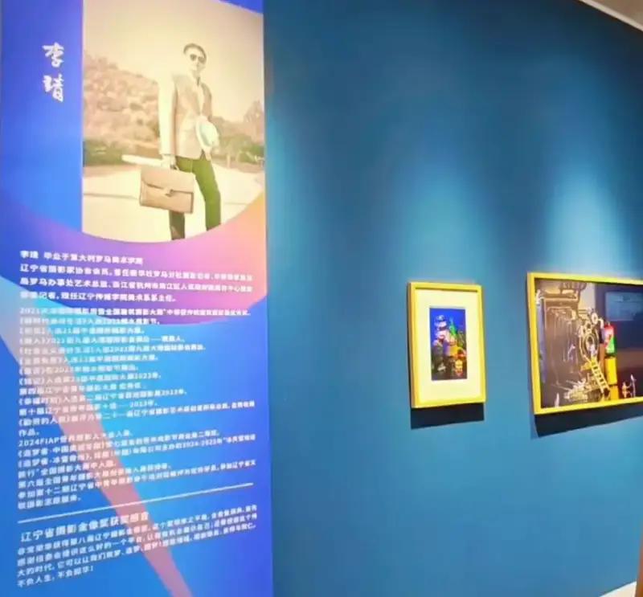

On September 13, the organizing committee of the 8th Liaoning Photo Gold Award released a Statement on Canceling the Award Winner Qualification of Li Jing for the 8th Liaoning Photo Gold Award:
Recently, the committee received reports that some of the entries by Li Jing, a winner of the 8th Liaoning Photo Gold Award, were suspected of plagiarism. The committee took the reports seriously. It asked experts to review the works. The experts found the works highly similar to the works of others, and confirmed they were copies. The committee decided to cancel Li Jing's winner qualification, take back the related honors, and bar him from the competitions and exhibitions held by the Liaoning Photographers Association.
The committee welcomes and thanks all sides for their attention, support, and oversight of its events. If it finds rule violations, it will deal with them seriously.
On September 3, the Liaoning Photographers Association announced the results of the 8th Liaoning Photo Gold Award. After a public notice with no objections, 10 winners were chosen. Li Jing won in the Commercial Photography category.

Li Jing's photo essay was sent to us by email. The Art Photography Committee of China Photo Network reviewed and accepted it. On August 17, 2025, it was published as a photo essay in the Contract Photographer column of China Photo Network, Contract Photographer | Li Jing: The Dream Maker, and he was invited to become a contract photographer of China Photo Network.
In light of the statement by the 8th Liaoning Photo Gold Award committee, and after discussion by the Art Photography Committee of China Photo Network, we have decided to cancel Li Jing's qualification as a contract photographer of China Photo Network.